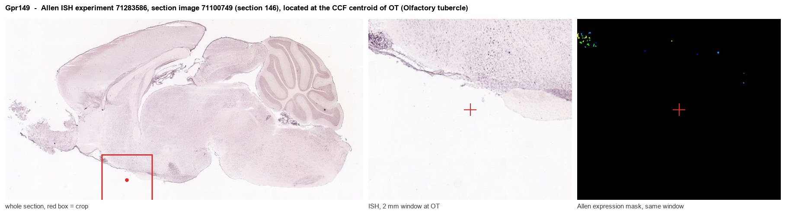
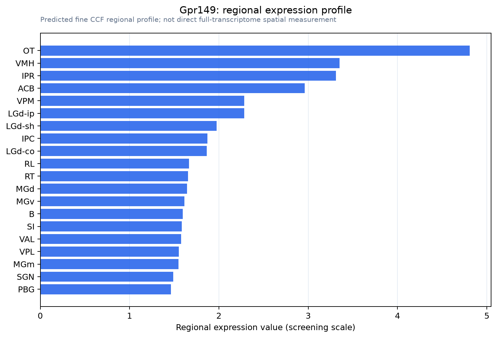

Gpr149
Probable G protein-coupled receptor 149 (G protein-coupled receptor PGR10)
Spatial tier: RESTRICTED · Class: GPCR · Top region: OT (Olfactory tubercle) · Positive regions: 24/554
43.1Discovery Score
41.6Targetability Score
CEvidence grade C
What this means: Gpr149: fine CCF profile is restricted toward OT (top regions: OT, VMH, IPR, ACB, VPM; 24 positive regions); direct spatial validation is still required.
Function in OT: evidence, prediction, innovation
- Gene function
- GPR149 is an orphan class A G-protein-coupled receptor with no identified endogenous ligand. Its two functional studies both come from knockout phenotyping: Edson et al. 2010 found Gpr149 is oocyte-enriched and that deleting it increases female fertility, and Wyler et al. 2024 found that Gpr149-null male mice show altered energy homeostasis with changes in body weight and adiposity, pointing to a central metabolic role.
- Region function
- The olfactory tubercle is the ventral striatal region of the olfactory cortex: its D1 and D2 spiny neurons and islands of Calleja receive both piriform odour input and dense VTA dopamine, and they encode odour valence and odour-guided motivated behaviour.
- Published in this region
- inferred No region-specific literature found. Wyler et al. 2024 is the only study to implicate Gpr149 in central energy homeostasis in mouse and reports brain expression without resolving the olfactory tubercle, and Edson et al. 2010 characterised the gene in the ovary; no anatomical or functional study of GPR149 in ventral striatum exists.
- Predicted function
- Prediction: given that the olfactory tubercle links odour valence to reward and feeding, and that Gpr149-null mice have an energy-homeostasis phenotype, GPR149 in tubercle spiny neurons is predicted to be a Gs- or Gi-coupled modulator that sets how strongly food odours drive approach and consumption. Tubercle-restricted Gpr149 deletion or knockdown is predicted to leave basal odour detection intact but to shift odour-guided motivation - most plausibly increasing approach to palatable food odours and raising intake of a high-fat diet - while chemogenetic silencing of Gpr149-expressing tubercle neurons should abolish the odour-primed component of feeding without affecting chow intake in the dark.
- Innovation
- ★★★★★ 5/5 An orphan receptor with a real but unexplained metabolic knockout phenotype mapped to the olfactory-reward interface, and nobody has connected the two.
- Tools
- Gpr149 knockout mice (Edson et al. 2010; Wyler et al. 2024) and IMPC alleles; no ligand or selective antibody - epitope-tagged knock-in and RNAscope are the practical entry points; Drd1-Cre and Drd2-Cre for tubercle cell types; AAV-shRNA for region-restricted knockdown combined with odour-guided operant assays.
- References
Direct evidence located at the region

Allen ISH experiment 71283586, section image 71100749 (section 146): the section that contains the CCF centroid of Olfactory tubercle according to the Allen image-to-atlas alignment (reference_to_image), with a 2 mm window around that point. Left: whole section, red box = window. Middle: ISH signal. Right: Allen's expression-mask view of the same window. open this image in the Allen viewer
Look it up yourself: Allen Mouse Brain ISH for Gpr149Allen reference atlas: OT (structure 754)ABC Atlas MERFISH viewer(in the ABC Atlas choose dataset MERFISH-C57BL6J-638850-CCF, colour cells by gene "Gpr149" or by parcellation_substructure "OT")All genes confined to OT + 3-D brain
Direct spatial evidence
MERFISH REGION LOCATOR

Regional expression figure

Predicted WMB × fine-CCF profile; not direct full-transcriptome spatial measurement.
Spatial profile
Evidence and specificity
- Evidence status
- PREDICTED_FINE
- Direct sources
- None; predicted localization only
- Exclusive threshold
- 12 positive regions out of 554
- Spatial specificity
- 0.285
- Top-region fraction
- 0.056
- Filter status
- PASS
Interpretation limits
- Cell-type-to-region projection is imputed expression, not direct spatial measurement.
- Adult reference atlases do not establish stability across age, sex, strain, state, or disease.
- Transcript abundance does not guarantee protein abundance or genetic-tool performance.